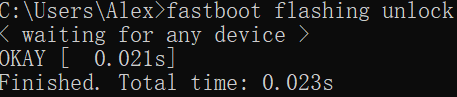
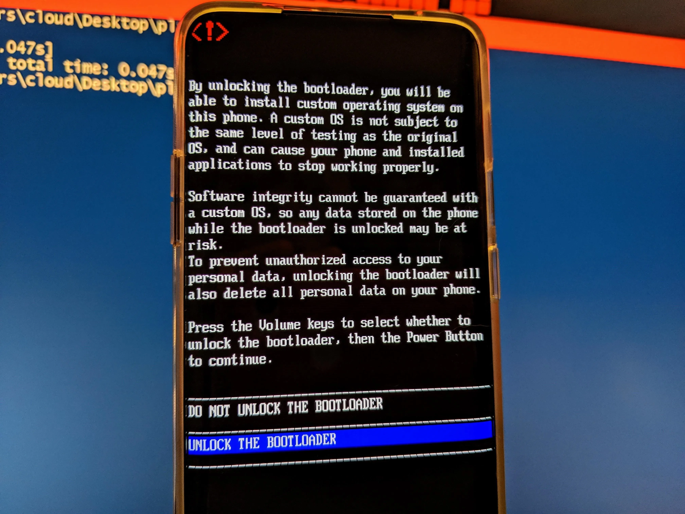
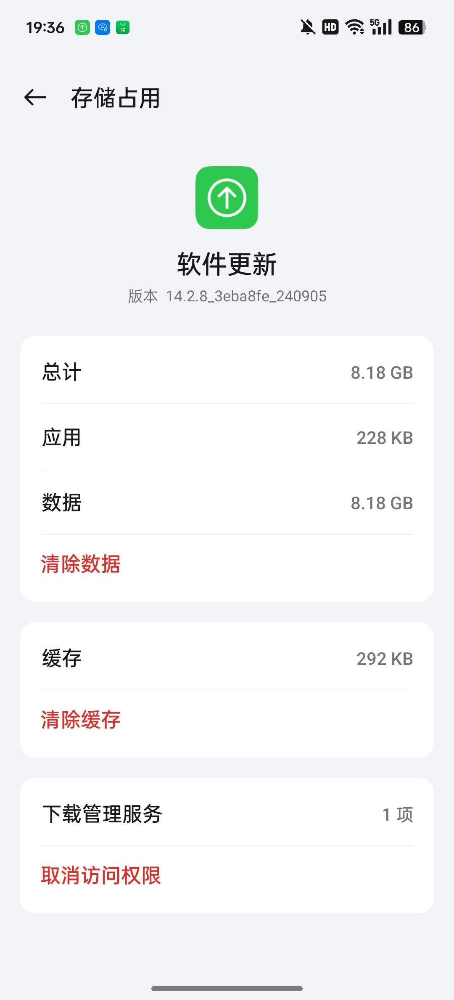
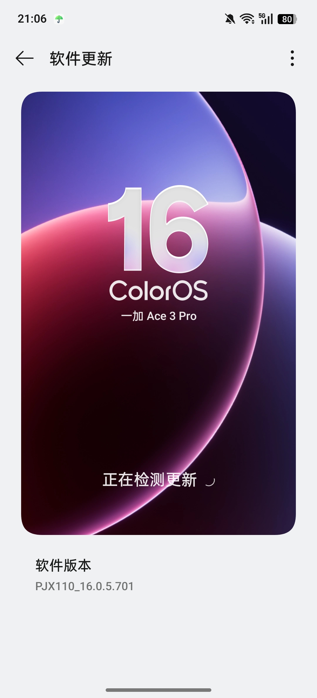
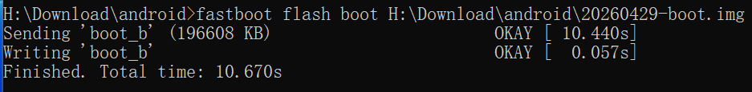
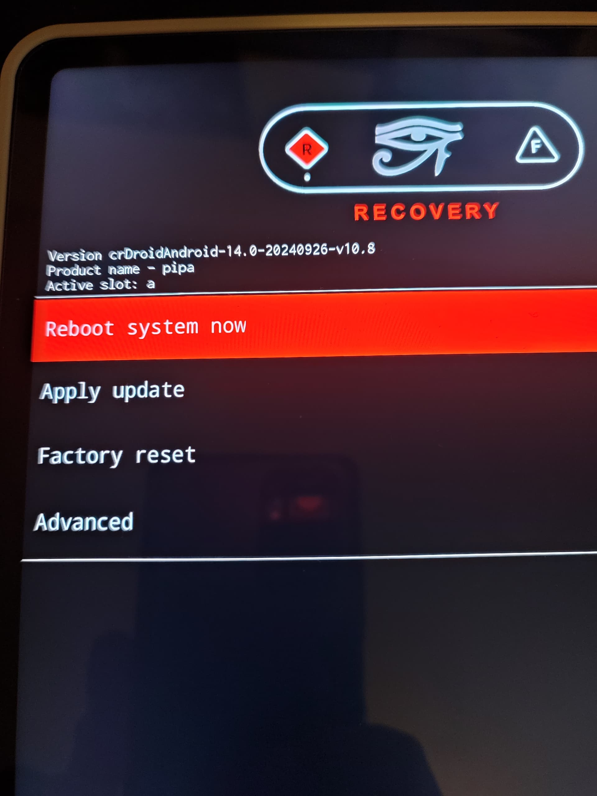
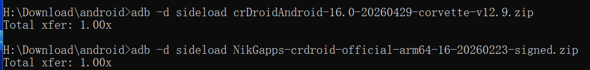
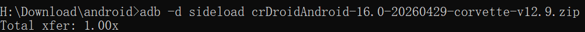

>[!WARNING] >以下教程仅供一加Ace3Pro安装crDroid 12(corvette)使用 > >玩机不规范,亲人两行泪 > >由操作不当造成的硬件损坏,请读者自负!
本篇教程参考了crDroid官网教程
操作准备
{{< file-tree >}}
- 一加Ace3Pro(已解锁BL且安装ColorOS16)+电脑+原厂数据线
- 下载以下文件
type: file comment: Download the latest ROM file
type: dir children: - name: boot.img type: file - name: dtbo.img type: file - name: init_boot.img type: file - name: vbmeta.img type: file - name: vendor_boot.img type: file - name: recovery.img type: file
type: file comment: Download the latest GApps {{< /file-tree >}}
- name: crdroid.zip
- name: recovery/
- name: nikgapps.zip
以上文件(不包含gapps)可以在sourceforge下载
下载之后目录如下图(本文使用当时的最新版本)
{{< file-tree >}}
type: file
type: file
type: file
type: file
type: file
type: file
type: file
type: file {{< /file-tree >}}
- name: 20260429-boot.img
- name: 20260429-dtbo.img
- name: 20260429-init_boot.img
- name: 20260429-recovery.img
- name: 20260429-vbmeta.img
- name: 20260429-vendor_boot.img
- name: crDroidAndroid-16.0-20260429-corvette-v12.9.zip
- name: NikGapps-crdroid-official-arm64-16-20260223-signed.zip
如果没有解锁bootloader,可以在CMD里如下操作:
adb reboot bootloader
fastboot flashing unlock注意解锁会清除所有数据.
成功效果如图:


安装步骤
底包(C16)
首先查看所需要的底包(理论上Android 16,即ColorOS16都可以)
但是(firmware)最好和crDroid构建时的底层版本一致.
在GitHub上查看专有文件列表前两行
## All proprietary files from this list, unless pinned and noted otherwise,
## are from OnePlus Ace 3 Pro (PJX110_16.0.5.701(CN01)).遂下载对应版本的ColorOS(701)
在OPlus 收集站可以解析任意版本的系统全量包链接.
对于ColorOS PJX110_16.0.5.701(CN01),其链接为:
https://gauss-compota-c-cn.allawnfs.com/remove-a39fc75063832d557a24f7ab02a02380/g-0e1e77d02e7bdea2328fda27ff230743/component-ota/26/04/14/faba2a6afc834843855599af7be64cf5.zip?sign=a0c55ee3494086f0981d65e678b94665&t=69f71e0a&AWSAccessKeyId=ayjy7KyLVHvDqDax6_KqJgtBeORTJARg9MSGiL66&Expires=1777804562&Signature=1dpWvcI4eyGiQT7obLfw2t91l54%3D
在应用管理中清除软件升级数据,然后断网即可在系统更新里手动安装全量包.


recovery
fastboot flash boot boot.img
fastboot flash dtbo dtbo.img
fastboot flash init_boot init_boot.img
fastboot flash vbmeta vbmeta.img
fastboot flash vendor_boot vendor_boot.img
fastboot flash recovery recovery.img
成功刷入REC及其底层后,由bootloader进入recovery
fastboot reboot recoverycrDroid
| 方式 | 介质 | 是否需要电脑 | 典型操作 | |------|------|-------------|----------| | 线刷 | USB 数据线 | ✅ 需要 | fastboot flash/adb sideload | | 卡刷 | SD 卡 / 本地存储 | ❌ 不需要 | 在 Recovery 中选择本地 zip 包刷入 |
这里我们采取sideload线刷(REC环境).

用 音量键+电源键 选择Factory Reset > Format data然后回到主菜单,选择Apply update
adb sideload crDroid.zip这里简单科普一下sideload原理:
| 方式 | 是否落盘 | 流程 | |------|---------|------| | 卡刷（本地 zip） | ✅ 完整文件已在设备上 | 读取 → 校验 → 解压安装 | | adb sideload | ❌ 不完整落盘 | 流式传输 + 同步校验安装 | | fastboot flash | ❌ | 直接写入对应分区，无"安装"概念 |
安装到一半,REC会询问是否进行额外安装(reboot in recovery again for installing additional packages),请根据实际情况选择.
{{< tabs >}} {{% tab title="安装gapps" %}}adb sideload gapps.zip

{{% /tab %}} {{% tab title="不安装gapps" %}}继续安装
{{% /tab %}} {{< /tabs >}}Total xfer(Total transfer)是总传输倍率，表示实际传输的数据量与原始包大小的比值,如果没有出错应该等于1,大于1说明数据出错,进行了重传。
最后,crDroid安装完成,重启即可.
结语
在厂商 ROM 日趋完善的今天，ColorOS 的流畅、MIUI(HyperOS) 的生态、甚至各家"AI 系统"的种种噱头， 早已将智能手机打磨得无懈可击——至少表面上如此。
那我们为什么还要费尽周折，刷一个看起来"简陋"的类原生 ROM？
答案或许很简单：我们不在乎手机里塞了多少用不到的功能，我们在乎的是这台手机究竟听谁的。
没有云控，没有静默推送，没有哪个进程在后台悄悄做着你不知道的事。 你的设备，运行着你选择的系统，只为你服务。
这种掌控感，是任何一套"智慧生活"或"AI 调度"都换不来的。
自由、隐私、开放——从来不是开箱即用的功能，而是你亲手刷进去的。